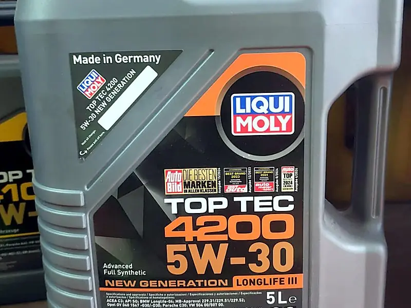
Tam Sentetik Motor Yağları
DPF ve turbolu modern benzinli/dizel motorlar için düşük küllü yağlar.
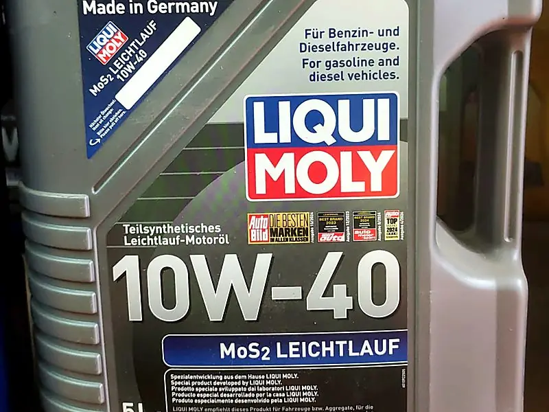
Yarı Sentetik & Mineral Yağlar
Eski model araçlar ve yüksek kilometreli motorlar için güvenilir koruma.
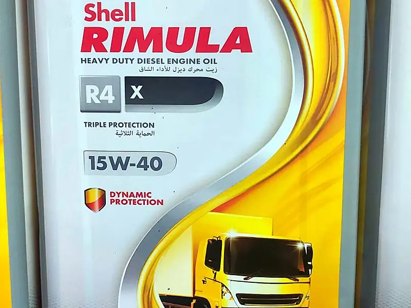
Ağır Vasıta Dizel Yağları
Kamyon, otobüs, iş makinesi ve tarım araçları için.
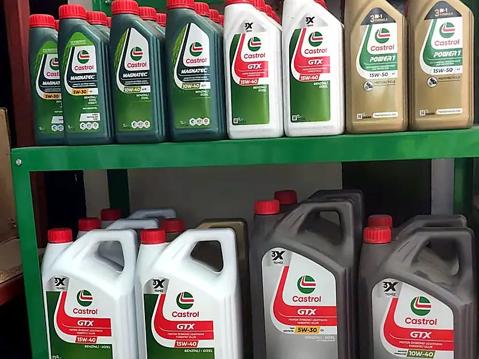
Motosiklet Yağları
Islak kavrama uyumlu 2 zamanlı ve 4 zamanlı motor yağları.
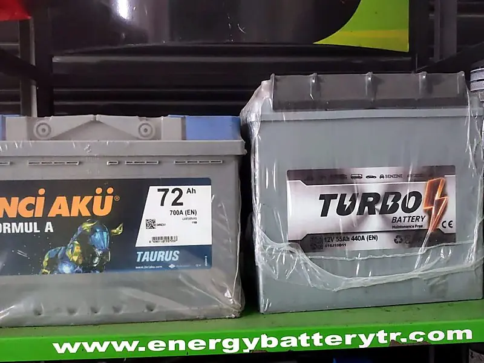
Binek Araç Aküleri
Tüm binek araç markalarına uygun, bakım gerektirmeyen garantili aküler.
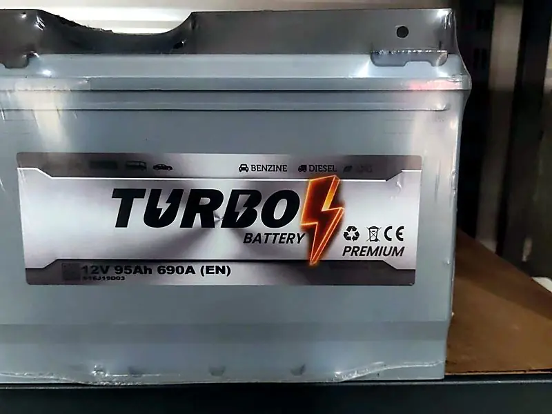
Start-Stop Aküler (EFB / AGM)
Start-stop sistemli araçlar için özel geliştirilmiş aküler.

Ticari & Ağır Vasıta Aküleri
Kamyon, traktör ve iş makineleri için yüksek kapasiteli aküler.
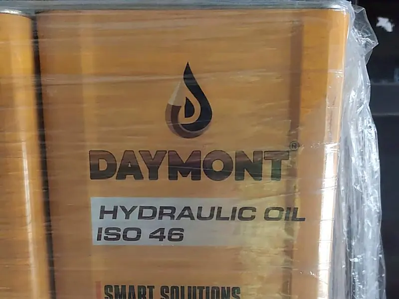
Hidrolik Yağlar
İş makineleri, presler, lift ve hidrolik sistemler için.
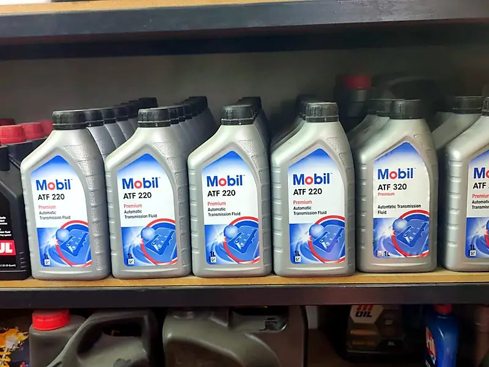
Şanzıman & Dişli Yağları
Manuel ve otomatik şanzıman, diferansiyel ve dişli yağları.
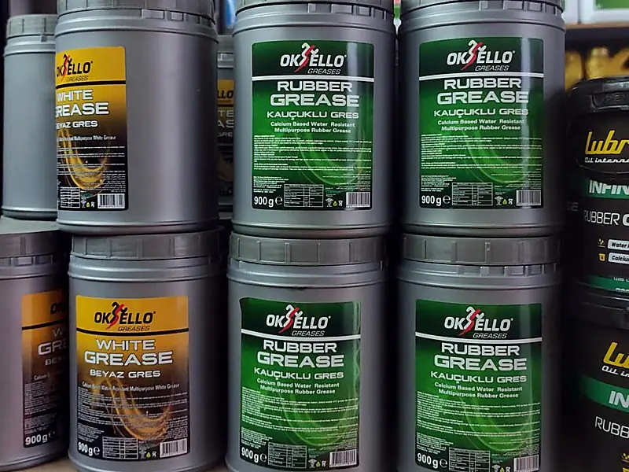
Gres Yağları
Rulman, şasi ve makineler için lityum sabunlu ve çok amaçlı gresler.
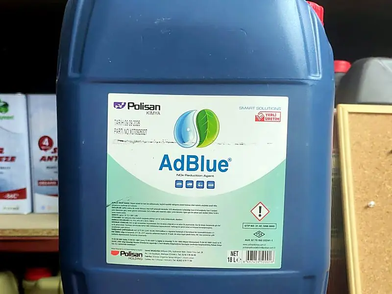
AdBlue
SCR sistemli dizel araçlar için ISO 22241 uyumlu üre çözeltisi.
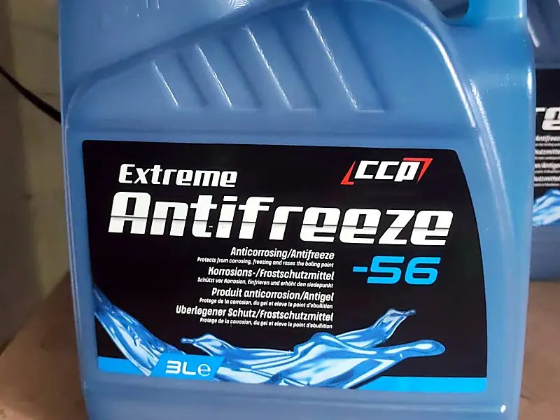
Antifriz & Soğutma Sıvısı
Organik ve klasik antifriz; hazır karışım veya konsantre.
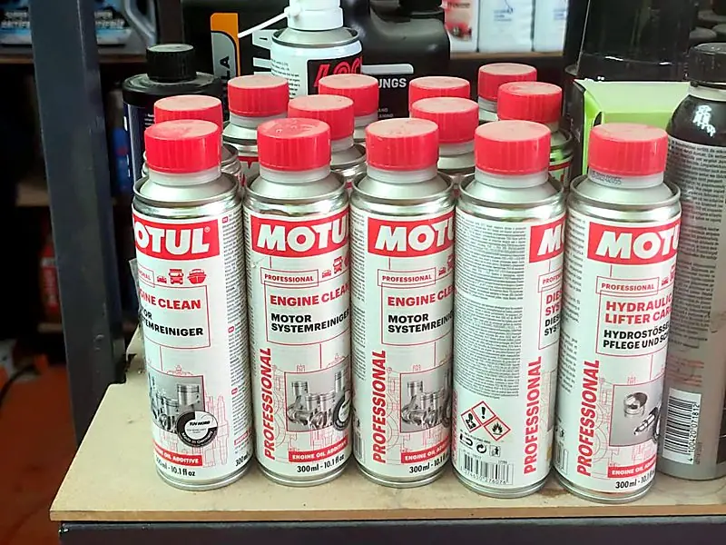
Filtre, Fren Hidroliği & Bakım
Yağ, hava, yakıt, polen filtreleri; DOT 4 fren hidroliği, katkılar ve spreyler.